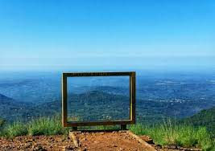
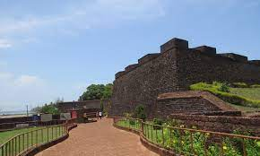
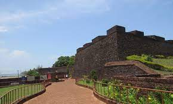
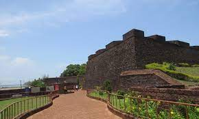
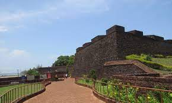

 



Kannur, also known as Cannanore, is a coastal city in the southern Indian state of Kerala. It is known for its pristine beaches, historic forts, and rich cultural heritage.
Kannur is famous for its unique cultural art form called Theyyam, which is a traditional ritualistic dance. The city also celebrates various festivals with great enthusiasm.
Kannur has been the birthplace of notable personalities, including renowned poet Sukumar Azhikode and the famous Malayalam writer Kamala Surayya (Madhavikutty).
Kannur hosts a variety of events, including the Theyyam festival, which showcases the traditional art form. The city also celebrates cultural and religious festivals with grand processions.
Kannur is home to several prestigious educational institutions, including Government College Kannur, Kannur University, and many others that offer a wide range of courses.